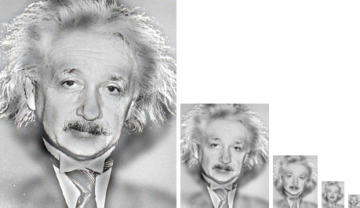
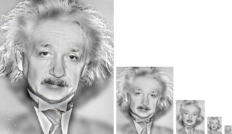

Image Filtering and Hybrid Images
Example of a hybrid image
This project creates hybrid images as described in the 2006 SIGGRAPH paper by Oliva, Torralba, and Schyns. A hybrid image is the combination of two different images, formed by summing the low-pass filtered version of one image with the high-pass filtered version of another. Hybrid images have the special property of appearing differently at different viewing distances. At close distances, the high frequency parts of an image can more readily be seen but at further distances the low frequency image stands out. In looking at the hybrid images on this page, the image to which the high frequency was applied dominates in the larger sizes while the interpretation changes to the low frequency image at smaller sizes.
Gaussian and Laplacian Images
Low frequency image of Einstein
High frequency image of Einstein
To obtain a hybrid image, filtered versions from a high-frequency and low-frequency filter must first be created. The images on the left and right show what an image looks like when a frequency filter has been applied. Applying the Gaussian filter to an image removes the high frequency component. The Gaussian function is smoothing, which blurs an image.
The Laplacian filter removes the low frequency components of an image. This filter can be obtained by subtracting the Gaussian filtered image from the original image. Intuitively, this makes sense because subtracting the low frequency pass of an image from the original should leave the high frequency pass.
Method to code these images
In order to make my code run as fast as possible, I utilized the fact that matlab matrix functions run quickly to avoid looping through each pixel. Essentially, I got the neighborhood around each pixel in the form of a column. This gave me a matrix in which each column represented the neighborhood centered around a pixel in the image. I then turned my filter into a column too and used repmat to repeat this column to give me a matrix the same size as the neighborhood one. Then I used element by element multiplication on these two matrices to apply the filter. Finally, I summed along each column in order to get the final return value obtained by applying the filter and reshaped the matrix to match that of the original image.
Results by scale
The table below shows what hybrid image is created from two images. The first image in the table is the one to which the low frequency filter is applied. This image is more prominently "seen" in the smaller images. The second image is the one to which the high frequency filter is applied. This image is more prominently seen in the larger images. The scale of images on the right show the hybrid image created.


|


|

 

|


|


|
Results from creation
The table below shows how the hybrid images were constructed. The first image is the hybrid. The second is the high frequency image and the third is the low frequency image.


|

|